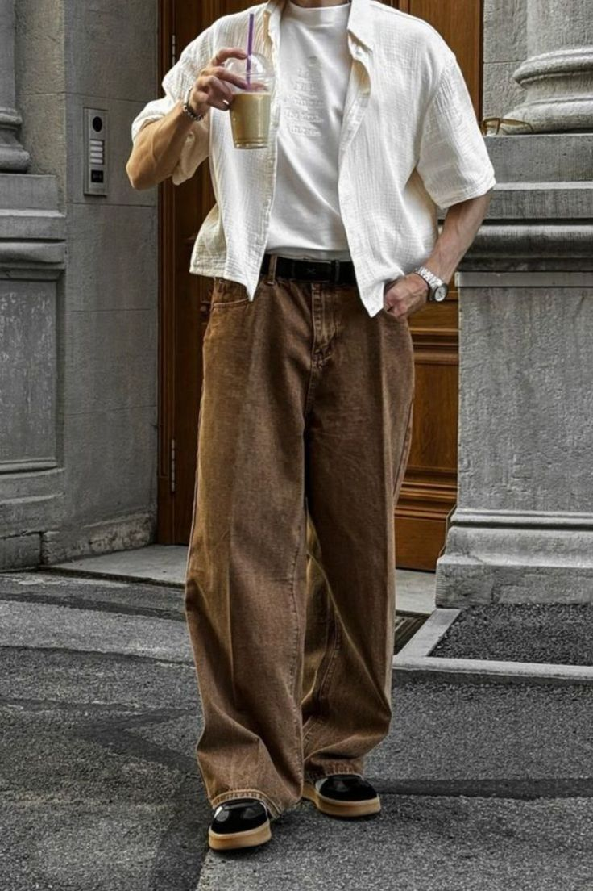
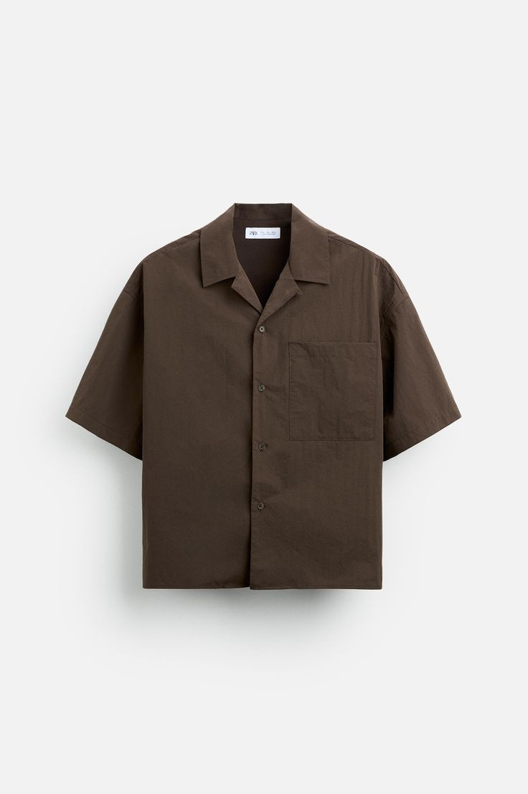
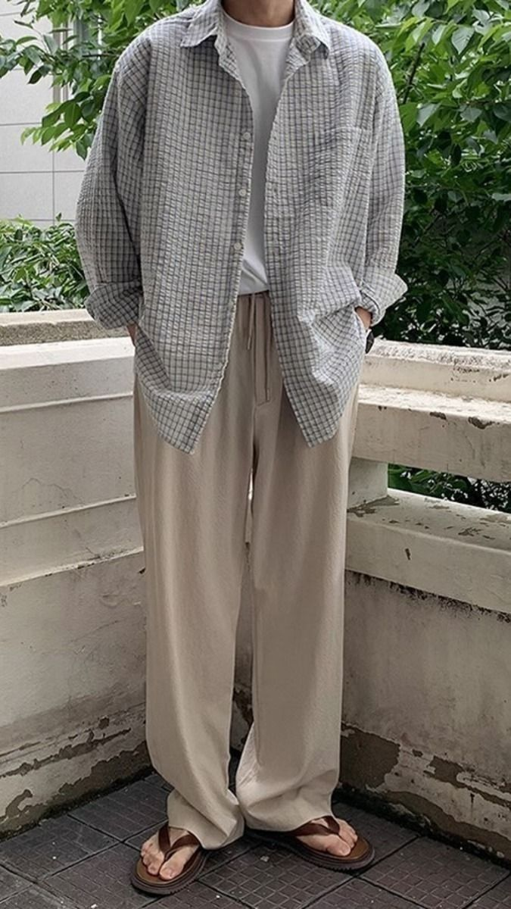
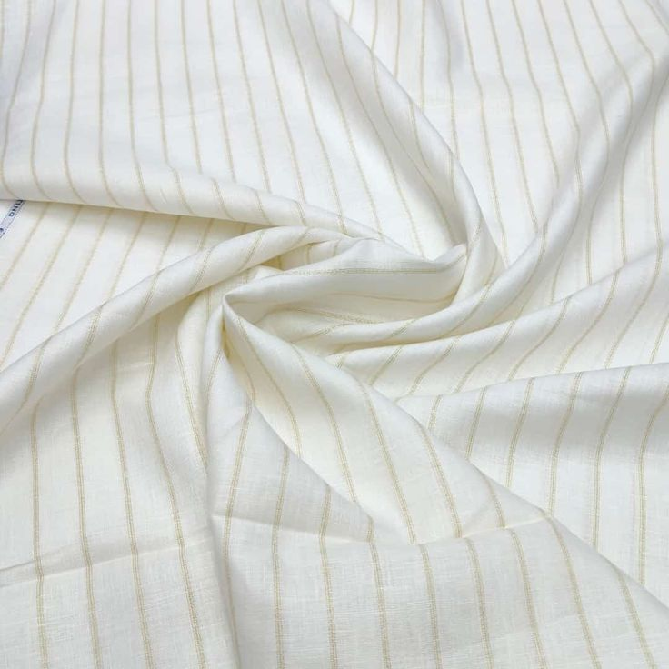
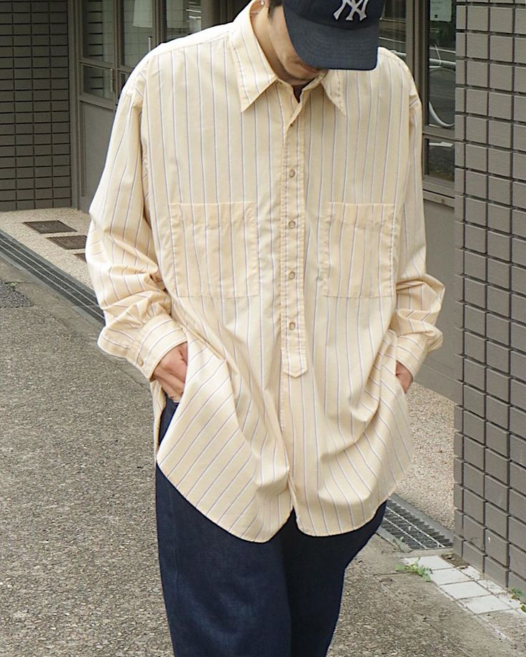
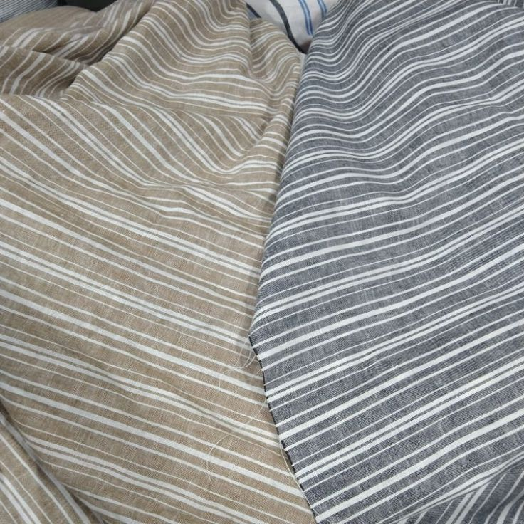

Mengenali Bahan Pakaian yang Nyaman untuk Aktivitas Remaja

.jpg)
.jpg)
Tujuan Blog
Bagi seorang remaja, pakaian adalah bagian dari keseharian yang selalu menyertai setiap aktivitas. Dari pagi hari saat memulai rutinitas, menjalani sekolah, dan menunaikan ibadah. Pakaian yang dikenakan harus mampu memberikan rasa nyaman sekaligus menjaga kesegaran tubuh. Di tengah cuaca tropis dan aktivitas yang padat, pemilihan material baju menjadi faktor penting agar tetap bebas dari rasa gerah dan bau tak sedap.
Katun Dobby


Katun Dobby
Pakaian berbahan katun dobby 100% dikenal memiliki daya serap keringat yang baik, sehingga nyaman dipakai dalam waktu lama dan tidak mudah menimbulkan bau tak sedap. Karakter kain yang breathable dan bertekstur ini menjadikannya pilihan yang ideal untuk mengutamakan kenyamanan sekaligus tampilan elegan.


Rayon
Pakaian berbahan rayon dikenal ringan, lembut, dan adem saat dikenakan. Sirkulasi udara yang baik membantu mengurangi kelembapan berlebih, sehingga keringat tidak mudah menumpuk dan risiko bau tak sedap pun berkurang.

